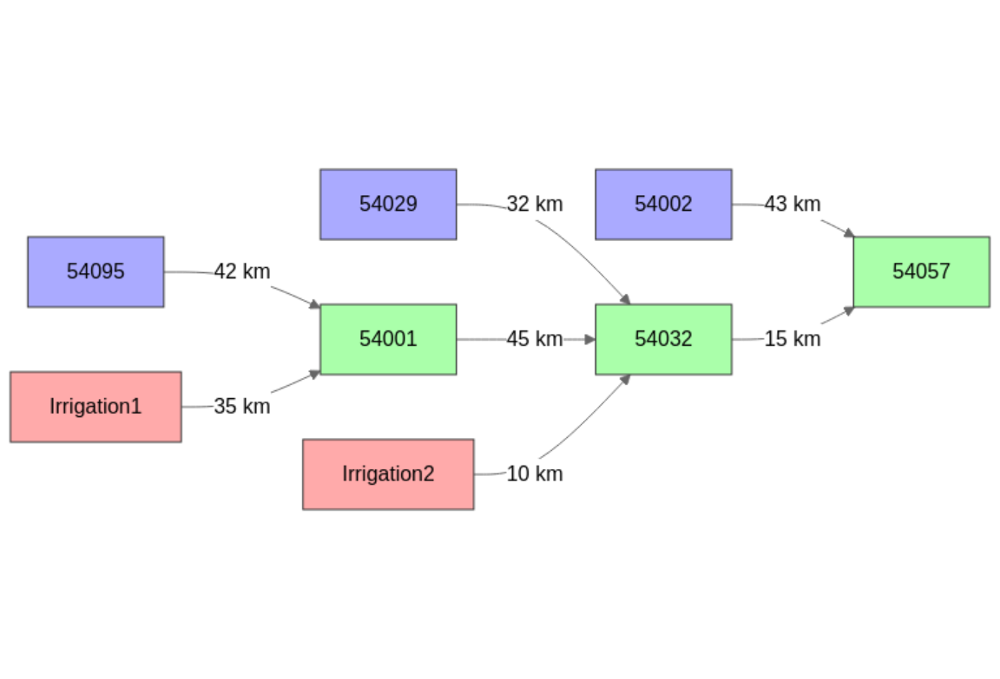
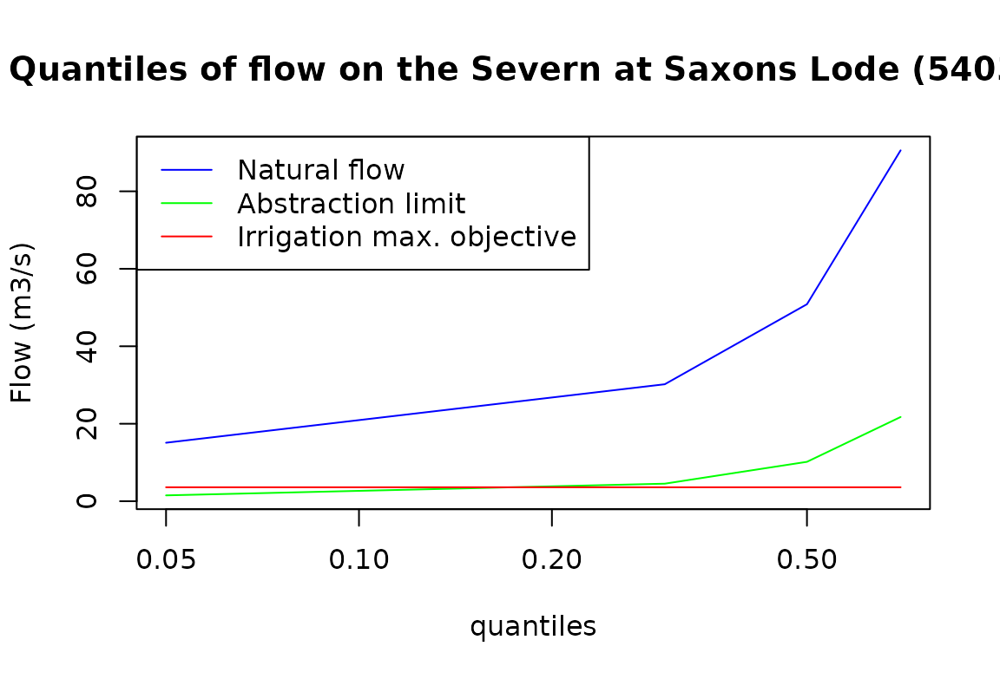
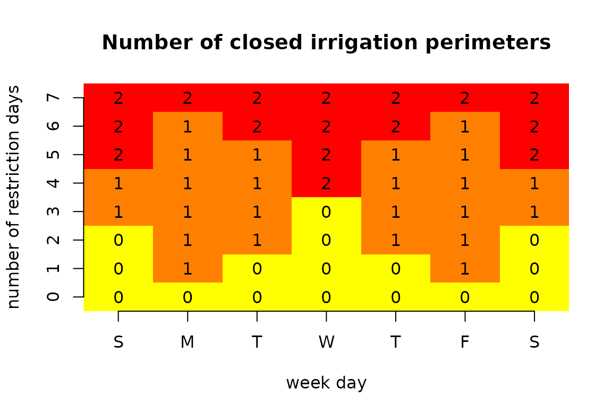
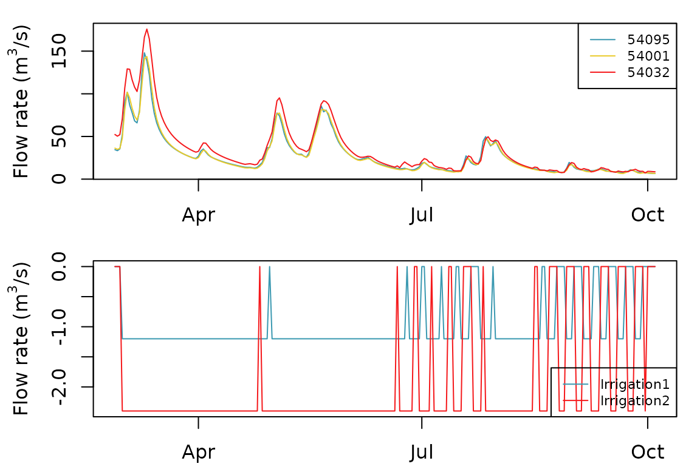
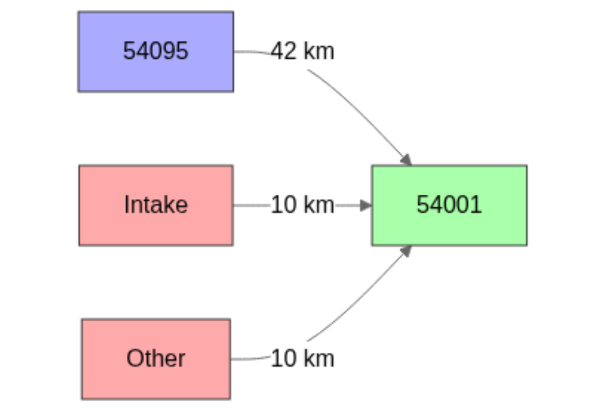
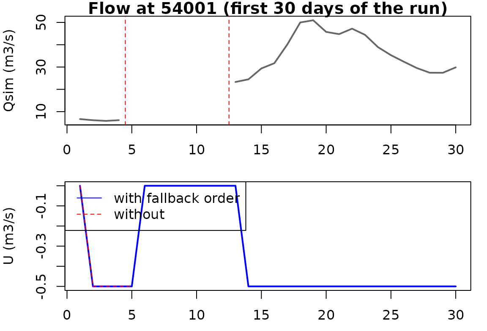

Severn_04: Modeling a regulated withdrawal (closed-loop control)
David Dorchies
Source:vignettes/V04_Closed-loop_regulated_withdrawal.Rmd
V04_Closed-loop_regulated_withdrawal.Rmd
library(airGRiwrm)
#> Loading required package: airGR
#>
#> Attaching package: 'airGRiwrm'
#> The following objects are masked from 'package:airGR':
#>
#> Calibration, CreateCalibOptions, CreateInputsCrit,
#> CreateInputsModel, CreateRunOptions, RunModelPresentation of the case study
Starting from the network and the calibration set in the vignette “V02_Calibration_SD_model”, we add 2 intake points for irrigation.
Network configuration
The following code chunk resumes the procedure of the vignette “V02_Calibration_SD_model”:
data(Severn)
nodes <- Severn$BasinsInfo[, c(
"gauge_id",
"downstream_id",
"distance_downstream",
"area"
)]
nodes$model <- "RunModel_GR4J"The intake points are located:
- on the Severn at 35 km upstream Bewdley (Gauging station ‘54001’);
- on the Severn at 10 km upstream Saxons Lode (Gauging station ‘54032’).
We have to add this 2 nodes in the network:
nodes <- rbind(
nodes,
data.frame(
gauge_id = c("Irrigation1", "Irrigation2"),
downstream_id = c("54001", "54032"),
distance_downstream = c(35, 10),
model = NA,
area = NA
)
)
nodes
#> gauge_id downstream_id distance_downstream area model
#> 1 54057 <NA> NA 9885.46 RunModel_GR4J
#> 2 54032 54057 15 6864.88 RunModel_GR4J
#> 3 54001 54032 45 4329.90 RunModel_GR4J
#> 4 54095 54001 42 3722.68 RunModel_GR4J
#> 5 54002 54057 43 2207.95 RunModel_GR4J
#> 6 54029 54032 32 1483.65 RunModel_GR4J
#> 7 Irrigation1 54001 35 NA <NA>
#> 8 Irrigation2 54032 10 NA <NA>And we create the GRiwrm object from this new
network:
griwrmV04 <- CreateGRiwrm(
nodes,
list(id = "gauge_id", down = "downstream_id", length = "distance_downstream")
)
plot(griwrmV04)
Blue nodes figure upstream basins (rainfall-runoff modeling only) and green nodes figure intermediate basins, coupling rainfall-runoff and hydraulic routing modeling. Nodes in red color are direct injection points (positive or negative flow) in the model.
It’s important to notice that even if the points “Irrigation1” and “Irrigation2” are physically located on a single branch of the Severn river as well as gauging stations “54095”, “54001” and “54032”, nodes “Irrigation1” and “Irrigation2” are not represented on the same branch in this conceptual model. Consequently, with this network configuration, it is not possible to know the value of the flow in the Severn river at the “Irrigation1” or “Irrigation2” nodes. These values are only available in nodes “54095”, “54001” and “54032” where rainfall-runoff and hydraulic routing are actually modeled.
Irrigation objective at the intakes
Irrigation1 covers an area of 15 km² and Irrigation2 covers an area of 30 km².
The example below focuses on the flow restriction, so the water demand is simplified: each irrigation system is assigned a constant objective flow for the whole irrigation season (March to September), of the order of the 8th decile of the monthly water need (potential evapotranspiration minus precipitation) of the catchment it irrigates in the peak months (June-July), converted into a flow and taking into account a 50% efficiency of the irrigation systems (Seckler et al. 2003):
- Irrigation1: 1.2 m3/s
- Irrigation2: 2.4 m3/s
# Formatting climatic data for CreateInputsModel (See vignette V01_Structure_SD_model for details)
BasinsObs <- Severn$BasinsObs
DatesR <- BasinsObs[[1]]$DatesR
PrecipTot <- cbind(sapply(BasinsObs, function(x) {
x$precipitation
}))
PotEvapTot <- cbind(sapply(BasinsObs, function(x) {
x$peti
}))
Qobs <- cbind(sapply(BasinsObs, function(x) {
x$discharge_spec
}))
Precip <- ConvertMeteoSD(griwrmV04, PrecipTot)
PotEvap <- ConvertMeteoSD(griwrmV04, PotEvapTot)The irrigation objective (unit: m3/s) is:
irrigationObjective <- matrix(0, nrow = 12, ncol = 4)
colnames(irrigationObjective) <- c("Month", "Irrigation1", "Irrigation2", "total")
irrigationObjective[, 1] <- 1:12
# Irrigation period between March and September
irrigationObjective[3:9, 2] <- 1.2
irrigationObjective[3:9, 3] <- 2.4
irrigationObjective[, 4] <- rowSums(irrigationObjective[, c(2, 3)])
irrigationObjective <- as.data.frame(irrigationObjective)
irrigationObjective
#> Month Irrigation1 Irrigation2 total
#> 1 1 0.0 0.0 0.0
#> 2 2 0.0 0.0 0.0
#> 3 3 1.2 2.4 3.6
#> 4 4 1.2 2.4 3.6
#> 5 5 1.2 2.4 3.6
#> 6 6 1.2 2.4 3.6
#> 7 7 1.2 2.4 3.6
#> 8 8 1.2 2.4 3.6
#> 9 9 1.2 2.4 3.6
#> 10 10 0.0 0.0 0.0
#> 11 11 0.0 0.0 0.0
#> 12 12 0.0 0.0 0.0Restriction of irrigation in case of water scarcity
Minimal environmental flow at the intakes
In the UK, abstraction restrictions are driven by Environmental Flow Indicator (EFI) supporting Good Ecological Status (GES) (Klaar et al. 2014). Abstraction restriction consists in limiting the proportion of available flow for abstraction in function of the current flow regime (Reference taken for a river that is highly sensitive to abstraction classified “ASB3”).
restriction_rule <- data.frame(
quantile_natural_flow = c(.05, .3, 0.5, 0.7),
abstraction_rate = c(0.1, 0.15, 0.20, 0.24)
)The control of the abstraction will be done at the gauging station downstream all the abstraction locations (node “54032”). So we need the flow corresponding to the quantiles of natural flow and flow available for abstraction in each case.
quant_m3s32 <- quantile(
Qobs[, "54032"] * griwrmV04[griwrmV04$id == "54032", "area"] / 86.4,
restriction_rule$quantile_natural_flow,
na.rm = TRUE
)
restriction_rule_m3s <- data.frame(
threshold_natural_flow = quant_m3s32,
abstraction_rate = restriction_rule$abstraction_rate
)
matplot(
restriction_rule$quantile_natural_flow,
cbind(
restriction_rule_m3s$threshold_natural_flow,
restriction_rule$abstraction_rate *
restriction_rule_m3s$threshold_natural_flow,
max(irrigationObjective$total)
),
log = "x",
type = "l",
main = "Quantiles of flow on the Severn at Saxons Lode (54032)",
xlab = "quantiles",
ylab = "Flow (m3/s)",
lty = 1,
col = rainbow(3, rev = TRUE)
)
legend(
"topleft",
legend = c("Natural flow", "Abstraction limit", "Irrigation max. objective"),
col = rainbow(3, rev = TRUE),
lty = 1
)
The water availability or abstraction restriction depending on the natural flow is calculated with the function below:
# A function to enclose the parameters in the function (See: http://adv-r.had.co.nz/Functional-programming.html#closures)
getAvailableAbstractionEnclosed <- function(restriction_rule_m3s) {
function(Qnat) {
approx(
restriction_rule_m3s$threshold_natural_flow,
restriction_rule_m3s$abstraction_rate,
Qnat,
rule = 2
)
}
}
# The function with the parameters inside it :)
getAvailableAbstraction <- getAvailableAbstractionEnclosed(restriction_rule_m3s)
# You can check the storage of the parameters in the function with
as.list(environment(getAvailableAbstraction))
#> $restriction_rule_m3s
#> threshold_natural_flow abstraction_rate
#> 5% 15.09638 0.10
#> 30% 30.19276 0.15
#> 50% 50.85096 0.20
#> 70% 90.57828 0.24Restriction rules
The figure above shows that, for the irrigation objective defined
above, the abstraction is limited when the natural flow at Saxons Lode
(54032) is under around 24 m3/s, i.e. when the
flow available for abstraction under the rule falls below the irrigation
objective.
Applying restriction on the intake on a real field is always challenging since it is difficult to regulate day by day the flow at the intake. Policy makers often decide to close the irrigation abstraction points in turn, several days a week, based on the mean flow of the previous week.
All the calculations below are based on the flows of the week preceding the current time step. First, the naturalized flow is equal to:
with:
- , the measured flow at the downstream gauging station
- , the total abstracted flow for irrigation during the last week (the abstracted water is not measured at the gauging station, so it is added back to the measured flow)
The available flow for abstraction is:
with
the availability function calculated from the quantiles of the natural
flow and the related abstraction rates (see the
restriction_rule_m3s above).
The flow actually planned for irrigation is then:
with the irrigation objective flow.
The number of restricted days per week (the number of days on which the perimeters must be closed) is then equal to:
with the function that returns the largest integer not greater than . When the available flow covers the irrigation objective (), and the perimeters are open for the whole week. When the available flow tends to zero, and the abstraction is completely stopped. The number of days actually available for irrigation is (which is exactly , the smallest integer not less than ).
The
restricted days are then spread over the week and shared between the two
perimeters by the restriction_rotation matrix. The matrix
has one row per day of the 7-day supervision window and one column per
perimeter; each entry is the restriction rank of the perimeter
on this day (each column is a permutation of the ranks 1 to 7):
restriction_rotation <- matrix(
c(5, 7, 6, 4, 2, 1, 3, 3, 1, 2, 4, 6, 7, 5),
ncol = 2
)
colnames(restriction_rotation) <- c("Irrigation1", "Irrigation2")
restriction_rotation
#> Irrigation1 Irrigation2
#> [1,] 5 3
#> [2,] 7 1
#> [3,] 6 2
#> [4,] 4 4
#> [5,] 2 6
#> [6,] 1 7
#> [7,] 3 5On a given day, a perimeter is closed when its rank on this day is lower than or equal to . As each column contains each rank exactly once, each perimeter is closed for exactly days per week. Because the ranks of the two perimeters are shifted with respect to each other, the closures are redistributed over the week: for low values of , the closures of the two perimeters never fall on the same day (and for there is at least one day per week when both perimeters remain open). As increases, the number of days on which the two perimeters are closed simultaneously increases: 1 day for , 3 days for , 5 days for and 7 days for (complete stop of the abstraction).
The figure below displays, for each possible value of (0 to 7), the number of closed perimeters on each day of the 7-day window:
m <- do.call(
rbind,
lapply(seq(0, 7), function(x) {
b <- restriction_rotation <= x
rowSums(b)
})
)
# Display the planning of restriction
image(
1:ncol(m),
1:nrow(m),
t(m),
col = heat.colors(3, rev = TRUE),
axes = FALSE,
xlab = "week day",
ylab = "number of restriction days",
main = "Number of closed irrigation perimeters"
)
axis(1, 1:ncol(m), unlist(strsplit("SMTWTFS", "")))
axis(2, 1:nrow(m), seq(0, 7))
for (x in 1:ncol(m)) {
for (y in 1:nrow(m)) {
text(x, y, m[y, x])
}
}
Implementation of the model
As for the previous model, we need to set up an
GRiwrmInputsModel object containing all the model
inputs:
# Flow time series are needed for all direct injection nodes in the network
# even if they may be overwritten after by a controller
QinfIrrig <- data.frame(
Irrigation1 = rep(0, length(DatesR)),
Irrigation2 = rep(0, length(DatesR))
)
# Creation of the GRiwrmInputsModel object
IM_Irrig <- CreateInputsModel(griwrmV04, DatesR, Precip, PotEvap, QinfIrrig)
#> CreateInputsModel.GRiwrm: Processing sub-basin 54095...
#> CreateInputsModel.GRiwrm: Processing sub-basin 54002...
#> CreateInputsModel.GRiwrm: Processing sub-basin 54029...
#> CreateInputsModel.GRiwrm: Processing sub-basin 54001...
#> CreateInputsModel.GRiwrm: Processing sub-basin 54032...
#> CreateInputsModel.GRiwrm: Processing sub-basin 54057...Implementation of the regulation controller
The supervisor
The simulation is piloted through a Supervisor that can
contain one or more Controller. This supervisor will work
with a cycle of 7 days: the measurement are taken on the last 7 days and
decisions are taken for each time step for the next seven days.
sv <- CreateSupervisor(IM_Irrig, TimeStep = 7L)The control logic function
We need a controller that measures the flow at Saxons Lode (“54032”) and adapts on a weekly basis the abstracted flow at the two irrigation points. The supervisor will stop the simulation every 7 days and will provide to the controller the last 7 simulated flow values at Saxons Lode (“54032”) (measured variables) and the controller should provide “command variables” for the next 7 days for the 2 irrigation points.
A control logic function should be provided to the controller. This
control logic function processes the logic of the regulation taking
measured flows as input and returning the “command variables”. Both
measured variables and command variables are of type matrix
with the variables in columns and the time steps in rows.
In this example, the logic function must do the following tasks:
- Calculate the objective of irrigation (m3/s) for each day of the current week
- Calculate the naturalized flow from the measured flow and the abstracted flow of the previous week
- Calculate the number of restricted days for the week under the flow restriction rule
- Return the abstracted flow for the next week, closing each perimeter on the days assigned to it by the rotation matrix
On the first supervision step there is no previous week yet, so the measured flow is taken directly as the natural flow (there is no previous abstraction to subtract from it).
fIrrigationFactory <- function(
supervisor,
irrigationObjective,
restriction_rule_m3s,
restriction_rotation
) {
function(Y) {
# Y is in m3/day (the last TimeStep simulated flows at node 54032)
# 1. Calculate the objective of irrigation (m3/s) for each day of the
# current week, according to the month of this day
month <- as.numeric(format(supervisor$ts.date, "%m"))
U <- irrigationObjective[month, c(2, 3)]
meanU <- mean(rowSums(U))
if (meanU > 0) {
# 2. Calculate the naturalized flow (m3/s) from the measured flow and
# the abstracted flow of the previous week
lastU <- supervisor$controllers[[supervisor$controller.id]]$U # m3/day
if (nrow(lastU) == 0) {
# First supervision: no abstraction yet, the measured flow is the natural flow
Qnat <- Y / 86400
} else {
Qnat <- (Y - rowSums(lastU)) / 86400
}
# 3. Calculate the number of restricted days for the week
# Maximum abstracted flow available under the restriction rule
Qrestricted <- mean(
approx(
restriction_rule_m3s$threshold_natural_flow,
restriction_rule_m3s$abstraction_rate,
Qnat,
rule = 2
)$y *
Qnat
)
# Total for irrigation
QIrrig <- min(meanU, Qrestricted)
n <- floor(7 * (1 - QIrrig / meanU))
# 4. Return the abstracted flow for the next week taking into account
# the restriction days: a perimeter is closed on a day when its rank in
# the rotation matrix is lower than or equal to the number of
# restricted days
U[restriction_rotation[seq(nrow(U)), ] <= n] <- 0
}
return(-U * 86400) # withdrawal is a negative flow in m3/day on an upstream node
}
}You can notice that the data required for processing the control
logic are enclosed in the function fIrrigationFactory,
which takes the required data as arguments and returns the control logic
function.
Creating fIrrigation by calling
fIrrigationFactory with the arguments currently in memory
saves these variables in the environment of the function:
fIrrigation <- fIrrigationFactory(
supervisor = sv,
irrigationObjective = irrigationObjective,
restriction_rule_m3s = restriction_rule_m3s,
restriction_rotation = restriction_rotation
)You can see what data are available in the environment of the function with:
str(as.list(environment(fIrrigation)))
#> List of 4
#> $ supervisor :Classes 'Supervisor', 'environment' <environment: 0x5626f5634c00>
#> $ irrigationObjective :'data.frame': 12 obs. of 4 variables:
#> ..$ Month : num [1:12] 1 2 3 4 5 6 7 8 9 10 ...
#> ..$ Irrigation1: num [1:12] 0 0 1.2 1.2 1.2 1.2 1.2 1.2 1.2 0 ...
#> ..$ Irrigation2: num [1:12] 0 0 2.4 2.4 2.4 2.4 2.4 2.4 2.4 0 ...
#> ..$ total : num [1:12] 0 0 3.6 3.6 3.6 3.6 3.6 3.6 3.6 0 ...
#> $ restriction_rule_m3s:'data.frame': 4 obs. of 2 variables:
#> ..$ threshold_natural_flow: num [1:4] 15.1 30.2 50.9 90.6
#> ..$ abstraction_rate : num [1:4] 0.1 0.15 0.2 0.24
#> $ restriction_rotation: num [1:7, 1:2] 5 7 6 4 2 1 3 3 1 2 ...
#> ..- attr(*, "dimnames")=List of 2
#> .. ..$ : NULL
#> .. ..$ : chr [1:2] "Irrigation1" "Irrigation2"The supervisor variable is itself an environment which
means that the variables contained inside it will be updated during the
simulation. Some of them are useful for computing the control logic such
as:
-
supervisor$idx.output: indexes of the current time steps of simulation (InIndPeriod_Run) -
supervisor$ts.date: date/time of the current time steps of simulation -
supervisor$controller.id: identifier of the current controller -
supervisor$controllers: thelistofController
The controller
The controller contains:
- the location of the measured flows
- the location of the control commands
- the logic control function
CreateController(
sv,
ctrl.id = "Irrigation",
Y = "54032",
U = c("Irrigation1", "Irrigation2"),
FUN = fIrrigation
)
#> The controller 'Irrigation' has been added to the supervisorRunning the simulation
First we need to create a GRiwrmRunOptions object and
load the parameters calibrated in the vignette
“V02_Calibration_SD_model”:
IndPeriod_Run <- seq(
which(DatesR == (DatesR[1] + 365 * 24 * 60 * 60)), # Set aside warm-up period
length(DatesR) # Until the end of the time series
)
IndPeriod_WarmUp <- seq(1, IndPeriod_Run[1] - 1)
RunOptions <- CreateRunOptions(
IM_Irrig,
IndPeriod_WarmUp = IndPeriod_WarmUp,
IndPeriod_Run = IndPeriod_Run
)
ParamV02 <- readRDS(system.file(
"vignettes",
"ParamV02.RDS",
package = "airGRiwrm"
))For running a model with a supervision, you only need to substitute
InputsModel by a Supervisor in the
RunModel function call.
OM_Irrig <- RunModel(sv, RunOptions = RunOptions, Param = ParamV02)
#> Processing: 0% 10% 20% 30% 40% 50% 60% 70% 80% 90% 100%Simulated flows during irrigation season can be extracted and plot as follows:
Qm3s <- attr(OM_Irrig, "Qm3s")
Qm3s <- Qm3s[Qm3s$DatesR > "2003-02-25" & Qm3s$DatesR < "2003-10-05", ]
oldpar <- par(mfrow = c(2, 1), mar = c(2.5, 4, 1, 1))
plot(Qm3s[, c("DatesR", "54095", "54001", "54032")], main = "", xlab = "")
plot(
Qm3s[, c("DatesR", "Irrigation1", "Irrigation2")],
main = "",
xlab = "",
legend.x = "bottomright"
)
par(oldpar)We can observe that the irrigation points are alternatively closed some days a week when the flow at node “54032” becomes low.
Handling missing data (NA) in the controller measurements
In a real network, the data used to compute the simulated flows can
be missing for some time steps: gaps in meteorological data, or missing
measured withdrawals at nodes that are not managed by any controller.
When the data are missing, the simulated flows at the affected locations
contain NA values, and a controller whose measured
variables (Y) are read from these flows then receives
NA values.
airGRiwrm does not replace the NA values of the
measured variables: the control logic function of a controller
is called with the measured matrix as it is, and it is up to the control
logic to decide which command (U) to issue when the
measurement is missing.
The recommended pattern is to define a fallback
order: a default command that is applied whenever the measured
variables contain NA values. In the example below, the
fallback order is “no withdrawal”: when the measured flow is unknown,
the withdrawal is set to zero.
A small demo network
To illustrate the behavior, the following small network is built with the Severn data used in the previous sections:
-
54095and54001: two catchments modeled with the GR4J model; -
Intake: a direct injection node whose withdrawal is managed by the controller; -
Other: a direct injection node which is not managed by any controller.
The flow at the 54001 node (the measurement location of
the controller) depends on the withdrawals at both the
Intake and the Other nodes.
nodesNA <- data.frame(
id = c("54095", "Intake", "Other", "54001"),
down = c("54001", "54001", "54001", NA),
length = c(42, 10, 10, NA),
area = c(
Severn$BasinsInfo$area[Severn$BasinsInfo$gauge_id == "54095"],
NA,
NA,
Severn$BasinsInfo$area[Severn$BasinsInfo$gauge_id == "54001"]
),
model = c("RunModel_GR4J", NA, NA, "RunModel_GR4J")
)
griwrmNA <- CreateGRiwrm(nodesNA)
plot(griwrmNA)
The withdrawals at the Other node are constant
(-0.2 m<sup>3</sup>/s) except for 7 days during
the first 11 days of the run for which the data are missing
(NA). These 7 days of missing data make the flow at
54001 unknown:
PrecipNA <- ConvertMeteoSD(griwrmNA, PrecipTot)
PotEvapNA <- ConvertMeteoSD(griwrmNA, PotEvapTot)
## One year of warm-up and one year of simulation
IndPeriod_RunNA <- seq(length(DatesR) - 365 + 1, length(DatesR))
IndPeriod_WarmUpNA <- seq(IndPeriod_RunNA[1] - 365, IndPeriod_RunNA[1] - 1)
ParamNA <- ParamV02[c("54095", "54001")]
## Withdrawals at the two intakes (m3/s): 0 for the controlled intake
## (overwritten by the controller) and 0.2 m3/s for the uncontrolled one
QinfNA <- data.frame(
Intake = rep(0, length(DatesR)),
Other = rep(-0.2, length(DatesR))
)
QinfNA <- QinfNA * 86400 # m3/day
## 7 days of missing data at the uncontrolled intake
QinfNA$Other[seq(IndPeriod_RunNA[1] + 4, IndPeriod_RunNA[1] + 10)] <- NA
IMNA <- CreateInputsModel(griwrmNA, DatesR, PrecipNA, PotEvapNA, Qinf = QinfNA)
#> CreateInputsModel.GRiwrm: Processing sub-basin 54095...
#> CreateInputsModel.GRiwrm: Processing sub-basin 54001...
#> Warning in airGR::CreateInputsModel(FUN_MOD = x, ...): 'Qupstream' contains NA
#> values: model outputs will contain NAs
RONA <- CreateRunOptions(
IMNA,
IndPeriod_WarmUp = IndPeriod_WarmUpNA,
IndPeriod_Run = IndPeriod_RunNA
)As announced by the warning issued above
('Qupstream' contains NA values: model outputs will contain NAs),
the missing data propagate to the simulated flows: the flow at
54001 is NA during the period of missing data
(plus one day of routing delay).
Two control logics for the same controller
The controller measures the flow at 54001
(Y) and commands the withdrawal at the Intake
node (U). The control logic withdraws 20% of the previous
measured flow, capped at 0.5 m3/s. Two versions of this logic
are implemented below: one without any handling of the
NA values, and one with a fallback
order:
## Control logic without NA handling
fWithdrawalNA <- function(Y) {
-pmin(0.2 * Y, 0.5 * 86400) # m3/day
}
## Same logic with a fallback order: when the measurement contains NA values,
## the withdrawal is set to zero (no withdrawal when the flow is unknown)
fWithdrawalNAFallback <- function(Y) {
if (any(is.na(Y))) {
return(matrix(0, nrow = nrow(Y), ncol = ncol(Y)))
}
return(-pmin(0.2 * Y, 0.5 * 86400))
}The simulation is run 3 times: once without any controller (open-loop
reference), once with the control logic without NA
handling, and once with the fallback order.
## Reference run without any controller
OMNAref <- RunModel(IMNA, RunOptions = RONA, Param = ParamNA)
#> RunModel.GRiwrmInputsModel: Processing sub-basin 54095...
#> RunModel.GRiwrmInputsModel: Processing sub-basin 54001...
#> Warning in RunModel_Lag(InputsModel, RunOptions, Param[1], OutputsModel): 8
#> time steps with NA values
## Run with the control logic without NA handling
svNA1 <- CreateSupervisor(IMNA, TimeStep = 1L)
CreateController(
svNA1,
"Irrigation",
Y = "54001",
U = "Intake",
FUN = fWithdrawalNA
)
#> The controller 'Irrigation' has been added to the supervisor
OMNA1 <- RunModel(svNA1, RunOptions = RONA, Param = ParamNA)
#> Processing: 0%
#> 10% 20% 30% 40% 50% 60% 70% 80% 90% 100%
## Run with the fallback order
svNA2 <- CreateSupervisor(IMNA, TimeStep = 1L)
CreateController(
svNA2,
"Irrigation",
Y = "54001",
U = "Intake",
FUN = fWithdrawalNAFallback
)
#> The controller 'Irrigation' has been added to the supervisor
OMNA2 <- RunModel(svNA2, RunOptions = RONA, Param = ParamNA)
#> Processing: 0% 10% 20% 30% 40% 50% 60% 70% 80% 90% 100%Observed behavior
The first 15 days of the simulation are summarized in the table below
(Y is the flow measured at 54001, shown here
from the run with the fallback order in which the measurement is only
affected by the missing data, and U is the withdrawal
commanded at the Intake node, both in m3/s):
Qm3sNA1 <- attr(OMNA1, "Qm3s")
Qm3sNA2 <- attr(OMNA2, "Qm3s")
i0 <- seq(1, 15)
tabNA <- data.frame(
date = format(Qm3sNA2$DatesR[i0], "%Y-%m-%d"),
Y = Qm3sNA2[["54001"]][i0],
U_fallback = Qm3sNA2[["Intake"]][i0],
U_naive = Qm3sNA1[["Intake"]][i0]
)
for (v in names(tabNA)[-1]) {
tabNA[[v]] <- ifelse(is.na(tabNA[[v]]), "NA", round(tabNA[[v]], 2))
}
knitr::kable(tabNA, row.names = FALSE)| date | Y | U_fallback | U_naive |
|---|---|---|---|
| 2014-10-01 | 6.68 | 0.0 | 0 |
| 2014-10-02 | 6.16 | -0.5 | -0.5 |
| 2014-10-03 | 5.86 | -0.5 | -0.5 |
| 2014-10-04 | 6.17 | -0.5 | -0.5 |
| 2014-10-05 | NA | -0.5 | -0.5 |
| 2014-10-06 | NA | 0.0 | NA |
| 2014-10-07 | NA | 0.0 | NA |
| 2014-10-08 | NA | 0.0 | NA |
| 2014-10-09 | NA | 0.0 | NA |
| 2014-10-10 | NA | 0.0 | NA |
| 2014-10-11 | NA | 0.0 | NA |
| 2014-10-12 | NA | 0.0 | NA |
| 2014-10-13 | 23.3 | 0.0 | NA |
| 2014-10-14 | 24.49 | -0.5 | NA |
| 2014-10-15 | 29.37 | -0.5 | NA |
The measured flow at 54001 is NA for 8
days: the 7 days of missing data at the Other intake plus
one day of routing delay. The number of NA values over the
whole simulation period is:
tabNAcount <- data.frame(
variable = c(
"Qsim at 54001, open-loop reference",
"Qsim at 54001, run with the fallback order",
"Qsim at 54001, run without fallback",
"U, without fallback",
"U, with the fallback order"
),
NA_values = c(
sum(is.na(OMNAref[["54001"]]$Qsim)),
sum(is.na(Qm3sNA2[["54001"]])),
sum(is.na(Qm3sNA1[["54001"]])),
sum(is.na(Qm3sNA1[["Intake"]])),
sum(is.na(Qm3sNA2[["Intake"]]))
)
)
knitr::kable(tabNAcount, row.names = FALSE)| variable | NA_values |
|---|---|
| Qsim at 54001, open-loop reference | 8 |
| Qsim at 54001, run with the fallback order | 8 |
| Qsim at 54001, run without fallback | 361 |
| U, without fallback | 360 |
| U, with the fallback order | 0 |
oldpar <- par(mfrow = c(2, 1), mar = c(2.5, 4, 1, 1))
i30 <- seq(1, 30)
plot(
i30,
Qm3sNA2[["54001"]][i30],
type = "l",
col = "grey40",
lwd = 2,
main = "Flow at 54001 (first 30 days of the run)",
xlab = "day",
ylab = "Qsim (m3/s)"
)
abline(v = c(4.5, 12.5), col = "red", lty = 2)
plot(
i30,
Qm3sNA2[["Intake"]][i30],
type = "l",
col = "blue",
lwd = 2,
main = "",
xlab = "day",
ylab = "U (m3/s)"
)
lines(i30, Qm3sNA1[["Intake"]][i30], col = "red", lty = 2)
legend(
"topleft",
legend = c("with fallback order", "without"),
col = c("blue", "red"),
lty = c(1, 2)
)
par(oldpar)The observed behavior is the following:
without any
NAhandling, theNAvalues of the measurement propagate to the commandUcomputed by the controller. The situation then degrades: the flow measured at the next time step is itself affected by the previous command, so theNAvalues are re-injected at each supervision step and persist for the rest of the simulation (360 out of the 365 days ofUareNAin the example above, and the flow at54001of that run isNAfor 361 days);with the fallback order, the command remains defined at all time steps: during the days when the measurement is missing, the fallback order (zero withdrawal) is applied, and the regular logic is used again as soon as the measurement is available. The
NAvalues are then confined to the period of missing data at the measurement location, as in the open-loop reference run.
The choice of the fallback order is left to the user: in this example the withdrawal is set to zero when the flow is unknown, which is a conservative default. The last issued command or a fixed seasonal objective could also be used.